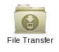

The "File Transfer" tab can be found at the bottom of the page. Click on it to expand it or use the icon:

On the left hand side you have access to a distant storage space. Here you can find:
Your simulations also have access to this distant storage space, which is used for storing their inputs and outputs.
You can upload, download or delete files/folders using the icons (on top of the File transfer tab) or by simply right-clicking on a file/folder and choosing the appropiate action. Files can also be downloaded by right-clicking (Download file or folder) on the links available in the input/output tree of each simulation (General information tab).
On the right hand side of the "File Transfer" tab, you have access to the transfer pool. When downloading a file, the file is first transferred to this transfer pool which is located on the platform's server. Once the transfer completes (bullet point goes from green to blue in the transfer pool tab), you can download the file on your computer. In order to do so, right-click on it or use the download icon just above it.
The transfer pool tab keeps a list of all your file transfers. You can clear it (the whole list or only selected operations) by using the "clear selected operations" icon. Note that by doing this you clear the operation history not the files themselves which are located on the distant storage space and/or on your computer